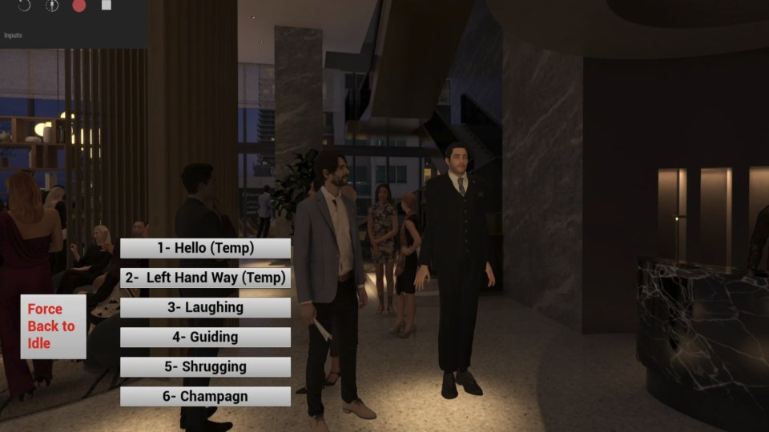
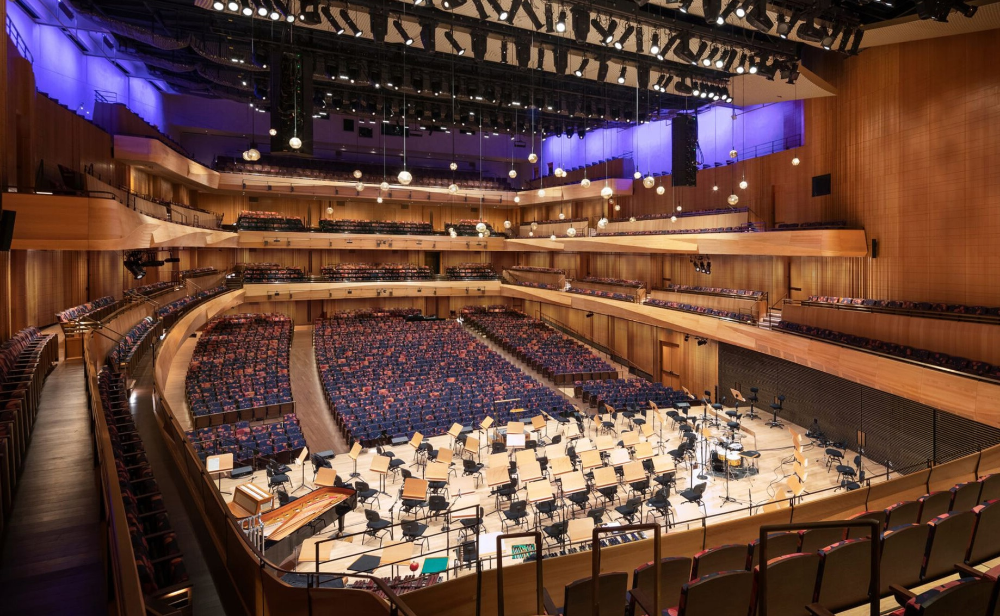
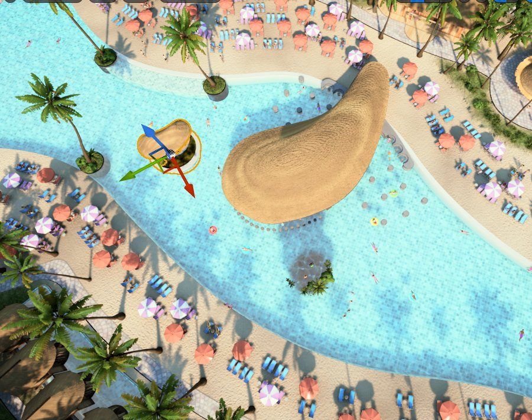
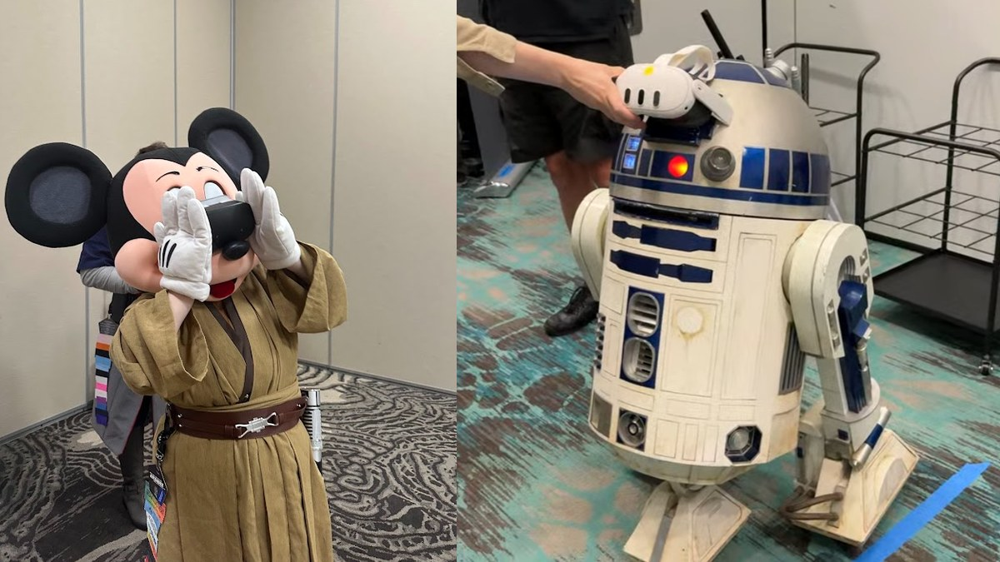
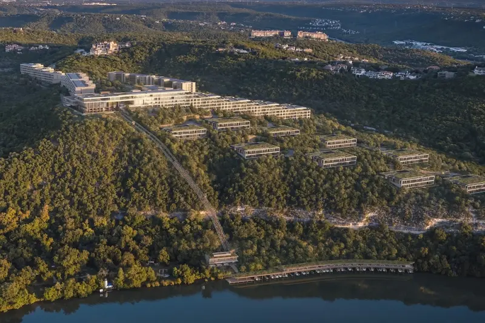

Start with one room.
Try Scaniverse and its free on-device route. Compare Polycam, whose splat creation requires a paid plan. Plan overlapping coverage and check current export limits.
Alex Coulombe · PMRE 2026
Caught the talk? Missed it? There’s a next step for you here.
Use the password from the final slide.
This is a playful client-side gate, not security. The downloads and page source are public.
PMRE 2026 · Las Vegas · November 19
Your next shoot can become a place someone steps inside.
Whether you saw Architect to XR-chitect or are meeting me here for the first time: I’m Alex Coulombe, an architect turned immersive designer and founder of Agile Lens. Start with the media you already make. Add a new way to experience it.
01 · Keep a second brain. Make a first prototype.
A downloadable starter kit you can edit and keep: a tool map, capture checklist, property brief, WebXR and Unreal learning paths, service-scope worksheet and experiment log.
Try Scaniverse and its free on-device route. Compare Polycam, whose splat creation requires a paid plan. Plan overlapping coverage and check current export limits.
Use the free, open-source SuperSplat editor and viewer. Inspect glass, missing surfaces, scale and the route. A splat is a captured appearance, not a measured survey.
Learn A-Frame / WebXR or Unreal basics. Start small, test the actual device and supply a desktop fallback. Headsets and commercial delivery may cost money.
No signup required. Verified official links, checked November 18, 2026. Free tiers have limits; check capture plans and Unreal licensing. Immersive WebXR normally needs HTTPS and a compatible headset/browser.
02 · Learn it with Alex
1:1 coaching and company training in Unreal Engine, VR, mixed reality and practical AI workflows.
Bring your property, pipeline or first prototype. We can work on the next useful step together. Public training is wrapping up; the focus is now individual and team sessions.
Meet Alex and explore training →03 · Agile Lens
Photoreal Unreal. Walkable unbuilt properties. Shared VR experiences. Real stagecraft around virtual worlds.
You bring the client, the craft and the point of view. We bring the team that can turn a bigger brief into a place people can experience.
04 · Places from the talk
What can someone understand by being there that they miss in a picture?

Luxury real estate at human scale. The talk’s gallery shows the project context and the immersive presentation, with existing collaborator credits retained in the speaker notes.

The actual room, the design model and a person judging the relationship. Physical railings with swappable heights helped explore comfort and the view in VR.

A six-person standalone VR balloon ride previewed Royal Caribbean’s future destination with a physical balloon installation aboard the 2025 President’s Cruise. A preview, not an opened resort.

Virtual performance and shared worlds connect the theater and technology threads of the talk. The project family includes live experiences alongside architectural work.
A bespoke theater VR workflow becomes a repeatable tool for checking seats and design options. The transferable idea: package what you know into an experience other people can use.
The deck now includes Alex’s latest BPI Trailer V2.

Four Seasons Private Residences Lake Austin: the talk describes a $2 billion development and the client’s “it was binary” verdict about the VR experience. This is the client’s recollection, not a measured claim that VR alone caused the sales or loan.
DBOX: source renderings. Pureblink: visualization levels. Agile Lens: optimized interactive experience and Holodeck.
Project descriptions stay within the talk’s existing claims and attributions. The Agile Lens site has more work and ways to collaborate.
Keep your core package. Add a splat tour, guided VR walkthrough, mixed-reality session on site or full Unreal experience when it answers a real client question.
PMRE exhibitor Nucleus4D documents tours publishing into Zillow and realtor.com’s 3D tour ecosystems. We have not established who was first with splats on Zillow. Zillow SkyTour is a separate, eligible-Showcase exterior workflow.
05 · The full talk
The Best Career Advice I Ever Ignored
Architecture, theater and technology, from an unexpected career to new possibilities for property media. Explore every slide and open the speaker notes with Shift+N.